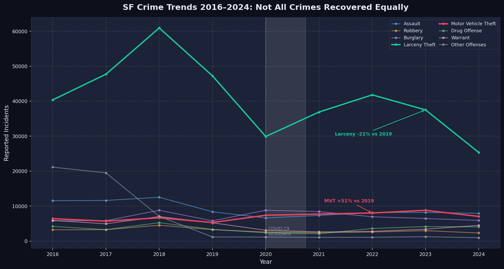

When COVID-19 emptied San Francisco's streets in 2020, overall crime plummeted — but one category went the other way. Motor vehicle theft surged, and it never came back down.
San Francisco's police department records every incident reported to officers. The city makes this data publicly available, and it covers over 3 million reports from 2003 to 2025 — spanning 10 policing districts and dozens of crime categories. This story focuses on eight crime types, sometimes called "focus crimes" in the course that produced this analysis:
The dataset has its quirks. These are reported incidents, not confirmed crimes, and not everything gets reported. Enforcement priorities shift, police districts are redrawn, and counting methods change. Still, for crimes that almost always get reported — especially vehicle theft, where insurance requires a police report — the counts are relatively reliable proxies for what's actually happening on the ground.
The central question here is simple: what did COVID-19 do to crime in San Francisco, and what happened next?
The pandemic brought San Francisco to a near-standstill in spring 2020. Offices emptied, restaurants closed, and foot traffic on city streets collapsed. As you'd expect, crime dropped. Larceny theft — opportunistic theft of property from people, cars, and stores — fell sharply, as did robbery and assault. With fewer people out, there were simply fewer opportunities.
But motor vehicle theft moved in the opposite direction. In 2019, SFPD recorded 5,305 vehicle theft incidents. By 2020 — the lockdown year — that number had jumped to 7,379. By 2022 it peaked at 8,031, and 2023 set a new high at 8,800. That's a 51% increase from pre-pandemic levels, sustained over four years.
When San Francisco's streets emptied, most criminals stayed home too. Car thieves didn't — they found the quieter streets made it easier, not harder.
Meanwhile, larceny theft — historically the most common of the eight focus crimes by a wide margin — dropped sharply in 2020 and has never returned to pre-pandemic levels. By 2023 it was still 21% below its 2019 count, likely reflecting the long-term shift to remote work and the slower recovery of downtown foot traffic.

Rising citywide counts alone don't tell the full story. To understand what changed, it helps to watch where the crime was happening year by year. The map below shows the density of motor vehicle theft incidents across San Francisco from 2016 to 2024, animated one year at a time.
Step through the years and you'll notice two things. First, pre-pandemic hotspots — concentrated in the eastern and southern parts of the city — were already prominent. Second, after 2020, the heat intensifies and begins spreading into neighborhoods that previously saw lower rates. Districts like Ingleside and Mission, which sit inland and border residential areas, saw some of the sharpest proportional increases.
One well-documented contributor to this shift was the catalytic converter theft epidemic. Catalytic converters contain platinum-group metals, and their street value spiked during the pandemic due to supply chain disruptions. Thieves could steal one in under a minute with a battery-powered saw. Because catalytic converter theft gets counted as motor vehicle theft in SFPD's records, part of what we're seeing in this data is less "cars being driven away" and more "a specific component being cut off while the car sat parked." That distinction matters for how you interpret the geographic spread.
Looking at individual police districts sharpens the picture. The chart below compares motor vehicle theft counts in 2019 (pre-pandemic baseline) and 2022 (post-pandemic peak) for each of SF's ten districts, sorted by 2022 volume.
Bayview topped the 2022 count with 1,412 incidents, up 63% from 2019. But the most dramatic proportional change was in Ingleside, which nearly doubled from 607 to 1,202 incidents — a 99% increase. Mission saw a 73% rise. These are predominantly residential and mixed-use neighborhoods with a lot of street parking, which creates the ideal conditions for both catalytic converter theft and conventional vehicle theft.
No district was unaffected — every bar for 2022 sits above its 2019 counterpart. But the magnitude varies. Northern and Southern districts, which cover downtown and the densest commercial areas, saw smaller relative increases, possibly because less street parking exists there, or because the remote work shift reduced the pool of cars left parked during business hours.
Hover over the bars for exact counts. The interactive nature of this chart is intentional: you should verify these claims yourself rather than just taking my word for them.
Vehicle theft is one of the most reliably reported crimes in this dataset, because insurance almost always requires a police report. So the counts here are probably closer to the true level of theft than, say, drug offenses, where reporting and enforcement patterns heavily shape the numbers. That makes the MVT trend more trustworthy than most.
That said, this data cannot tell us why vehicle theft rose. The catalytic converter hypothesis is credible and well-supported by news coverage, but it's not something I can verify directly from this dataset — SFPD records don't distinguish between a stolen car and a stripped one. The rise could reflect economic hardship, reduced deterrence from lighter foot traffic, a specific theft market that opened up, or all three simultaneously. These causes are impossible to disentangle from incident counts alone.
It's also worth noting that district-level patterns can mislead. District boundaries don't map neatly onto neighborhoods, and population density varies enormously across districts. Bayview has more MVT in absolute terms partly because it's a large district with a lot of residential street parking — not necessarily because any given block is more dangerous. Per-capita or per-registered-vehicle rates would be a better denominator, but those numbers weren't part of this analysis.
Finally: a pattern in the data is not a policy prescription. Seeing that Ingleside doubled its MVT count doesn't mean Ingleside needs more police patrols. It might mean better street lighting, fewer parking spots, or a coordinated response to the catalytic converter market. Anyone using this analysis to argue for resource allocation should pair it with community input and broader context — something no chart can substitute for.